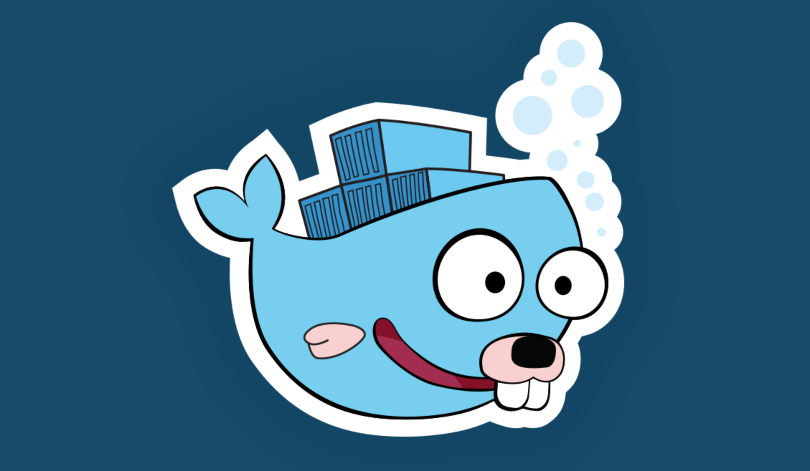
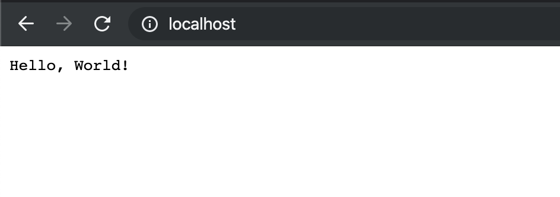
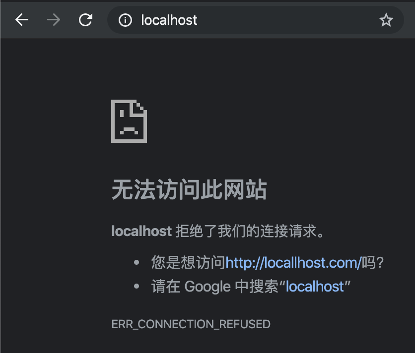
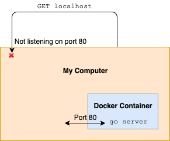
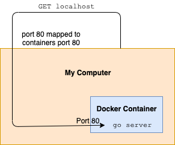
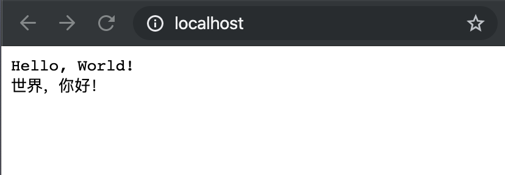

Docker 足够轻量、也非常易用，并且可以确保我们所有的运行环境保持一致。
在这篇文章中，我将通过创建 Docker 容器来部署一个 Go API 服务。当我对源码进行修改时，这个 Go 服务也会立即重新加载。
通过这个方式我们就不需要再在开发过程中多次重新编译 Docker 镜像了。

创建 Go 模块
官方在 Go 的 1.13 版本中介绍了模块的概念。这意味着我们不再需要把整个工程放在 Go 的工作空间下了。
开始前，我创建一个新的目录 go-docker 来放置所有文件。
然后初始化一个 Git 仓库并创建 Go 模块。
1 | git init |
你会看到在项目目录下出现了一个 go.mod 文件。这个文件将存有这个模块下所有的依赖，类似于 Node 开发中用到的 package.json 或 Python 中的 requirements.txt。
构建 API
模块设置好了，现在来构建一个简单的 API 服务。
我准备在构建这个 API 服务时使用 gorilla/mux 路由包。我也可以只用 Go 中提供的标准模块来实现路由，但我想确保模块依赖可以按照预期工作，并且利用 mux 可以支持我们构建更加复杂的应用。
1 | go get -u github.com/gorilla/mux |
执行这个命令后，你会看到它被作为依赖写入了 go.mod 文件。
1 | ### module github.com/Panmax/go-docker |
接下来，创建这个 Go 项目的主文件 commands/runserver.go。
1 | package main |
这个 API 只是简单返回一条消息：「Hello World!」
在把这个程序放进 Docker 容器前我们最好先来测试一下。通过 go run 命令来运行这个服务。
1 | go run commands/runserver.go |

API 服务可以正常工作。
配置 Docker
我们开始为这个项目构建 Docker 镜像。Docker 镜像包含一组用来告诉 Docker 需要提供什么环境的指令。
1 | FROM golang:latest |
使用 golang:latest 镜像作为这个自定义镜像的基础镜像。这样就可以免去 Go 开发环境的配置。
将整个项目拷贝到了镜像的 /app 目录下，然后通过 go mod download 下载依赖。
最后，我们告诉 Docker 执行 go run commands/runserver.go 命令来启动服务。
执行以下命令来构建这个镜像：
1 | docker build -t go-docker-image . |
现在我已经构建好了 Docker 镜像，接下来我们实际启动一下这个 Docker。
1 | docker run go-docker-image |
服务已经监听在了 Docker 容器中，但是当我通过浏览器中打开 localhost 时却发现无法访问。

出现这个情况的原因是，虽然程序在 Docker 容器内监听了 80 端口的传入请求，但是它并没有在宿主机的 80 端口上进行监听。因此我们给 localhsot 发送一个 GET 请求，它是找不到正在运行的服务的。
我用一张逻辑图来表述一下这个问题：

为了解决这个问题，我们需要把容器内的 80 端口映射到主机的 80 端口。
1 | docker run -p 80:80 go-docker-image |
端口映射后的逻辑图如下：

现在再来访问 localhost，就可以看到「Hello World!」显示在了页面上。
修改源码
我们来对这个 API 做一点调整：
1 | package main |
我在这个 API 的返回结果中新加了一行消息，我们再来启动一个新的 Docker 容器。
1 | docker run -p 80:80 go-docker-image |
但是如果我现在访问 localhost，看到的仍然是旧消息。
这是因为 Docker 镜像没有变化。为了使变更生效，我们必须重新构建这个镜像。
1 | docker build -t go-docker-image . |
现在就可以看到更新后的消息了。

配置热加载
每次对代码修改后，重新构建 Docker 镜像会花费很长时间，我们来让这个系统更好用一点。
我要使用的是 Compile Daemon 包。如果有任何 Go 源码发生了变更，这个包会重新编译并重启我们的 Go 程序。
1 | FROM golang:latest |
我修改了 Dockerfile 来下载 CompileDaemon 包。
之后修改了 ENTRYPOINT 后面的命令来运行 CompileDaemon 程序，同时为它指定了项目编译和服务启动命令。每次有文件变化后，以上命令就会被执行。
重新编译这个镜像：
1 | docker build -t go-docker-image . |
启动 Docker 时，我添加了 -v ~/Projects/go-docker:/app 参数。这样就可以把我本机的 go-docker 目录挂载到 Docker 容器内的 /app 目录下了。
当我修改了本机 go-docker 目录内的文件时，容器 /app 目录下的文件也会变化。
最终的启动命令如下。
1 | docker run -v ~/Projects/go-docker:/app -p 80:80 go-docker-image |
容器运行过程中，尝试修改源码，你会看到更改自动生效了。
1 | 2019/11/20 11:59:53 Running build command! |
使用 Docker Compose
每次运行容器时，我都要输入很长的启动命令：docker run -v ~/Projects/go-docker:/app -p 80:80 go-docker-image。在这个项目中倒没有太大问题，毕竟我才只有一个容器要启动。
但假设我有一个需要启动很多容器的项目，执行多个 docker run 命令会非常麻烦。
解决方案是使用 Docker Compose。利用这个工具，我们可以指定运行 docker-compose up 命令时要启动哪些容器。
为了配置它，我们需要创建一个 docker-compose.yml 文件：
1 | version: "3" |
这里，我声明了要创建一个名为 go-docker-image 的镜像。这个镜像使用当前目录下的 Dockerfile 来构建。同时我配置了端口映射和目录挂载。
执行 docker-compose up 来启动 docker-compose.yml 中指定的容器。
现在，我有了一个运行在 Docker 内的 API 服务，与此同时，当代码变化时这个服务也会自动重新加载。
可以在这里查看项目源码：https://github.com/Panmax/go-docker